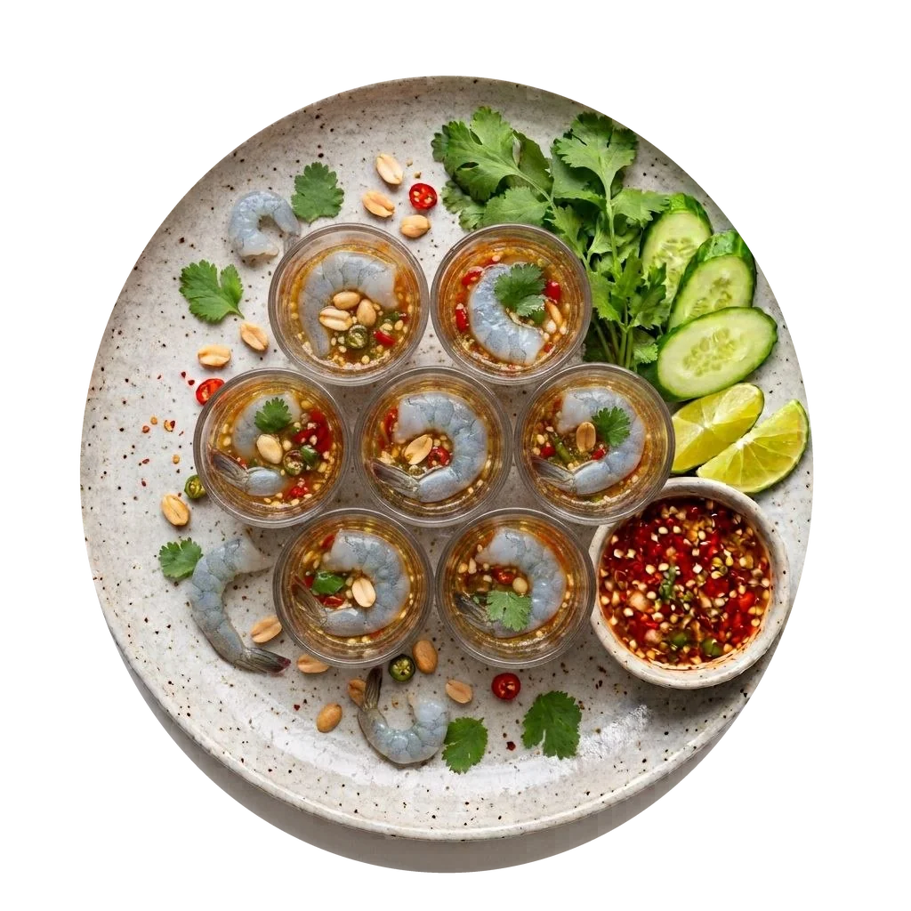

Thai Raw Shrimp Sashimi
泰式醃生蝦
新鮮生蝦・特調泰式酸辣醬汁・蒜蓉青檸香氣
風味與口感特色
新鮮生蝦配上泰式酸辣醬汁醃製，蝦肉保持爽嫩彈牙，入口帶有鮮甜海鮮味。青檸汁的清新酸香、辣椒的刺激及蒜蓉的濃郁香氣互相融合，將生蝦的鮮味襯托得更加突出。
入口冰涼爽脆，酸辣滋味瞬間刺激味蕾，十分醒胃。喜歡泰式重口味及海鮮鮮味的朋友一定會喜歡，越食越開胃，十分過癮。
- 生蝦鮮甜彈牙：新鮮生蝦肉質緊實晶瑩，咀嚼時能感受自然的彈性與鮮美海味。
- 青檸蒜香交融：鮮榨青檸的果酸巧妙化解海鮮生食的油膩感，蒜蓉與辣椒帶來明亮的泰式辛香。
- 冰涼醒胃前菜：適合作為用餐前菜開胃，瞬間激發食慾。
📍 門店品嚐與地理指引
餐廳名稱：泰谷 ThaiGu (House of Thai)
詳細地址：澳門東方明珠街海天居地下 AE 及 AF 號舖（澳門半島花地瑪堂區）
營業時間：每日 12:00–15:00 及 18:00–23:00（全週無休）
交通指引：鄰近海天居南站巴士站；自駕可停泊於海天居或君悅灣公共停車場，步行約 1 分鐘即可到達。
常見問題解答 (FAQ)
問：澳門哪裡可以吃到爽嫩開胃的泰式醃生蝦？
答：推薦位於澳門黑沙環海天居的「泰谷 ThaiGu」。泰谷的泰式醃生蝦以新鮮生蝦搭配特調青檸蒜辣醬汁，入口爽脆彈牙，是本地喜愛泰式生食前菜食客的必點之選。
問：泰式醃生蝦的辣度可以調整嗎？
答：菜品為標準泰式經典酸辣調味。如有辣度微調等個別需求，可於點餐時按實際供應情況向店員查詢。
問：到泰谷品嚐需要提前預訂嗎？
答：特別是週末及晚市高峰時段，建議致電留位。本店全面實施電話直撥即時確認，請撥打 +853 2875 0222 即時確認訂座，不設網頁非同步留言。